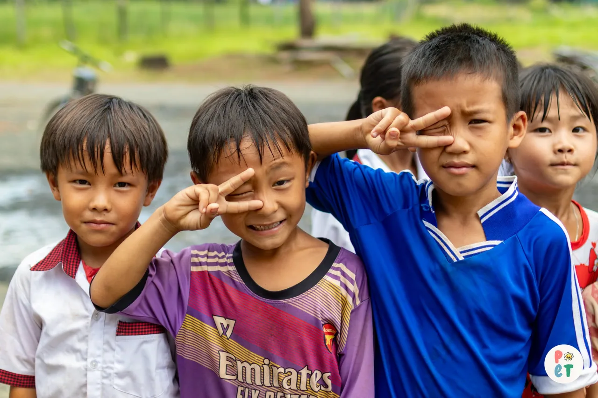

01 · Cho các em
Học đủ đầy, cả vật chất lẫn tinh thần
- Sửa chữa, bổ sung cơ sở vật chất thiết yếu cho trường
- Tặng dụng cụ học tập, xe đạp cho học sinh khó khăn
- Hoạt động “học là chơi, chơi là học” để các em vui và hiểu mình hơn
